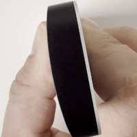
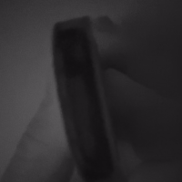

What is Infrared Light?
In the full spectrum of light, the human eye can only detect a small portion of it which we call visible light. At the high-energy end of the visible light is the color violet and at the lower-energy end is red. Right outside of those two extremes are Ultraviolet (UV) and Infrared (IR). Using some standard camera equipment, we can “see” these two extremes. Today we’re going to focus on Infrared, it is easier and safer to explore.
How do I check if my camera can “see infrared?”
You’d be surprised at how many digital cameras you have that can “see” infrared light already. If the camera has some sort of auto-focus, it is probably shining IR light and the camera sensor can detect bright spots (close things) and focus on them.
Here is an easy way to check. Get any IR TV remote and shine it into the lens of your camera. If you see the light flashing on the video screen, but not with your eyes, the camera is IR sensitive. Infrared is a range of wave-lengths, so just because this works doesn’t mean we can take the Infrared photos you want!
|  |  |
| Infrared light from a TV remote recorded in camera | Infrared light from a TV remote recorded in camera with an IR Filter. |
What hardware do I need?
Once you have confirmed your camera can “see” Infrared, you just need two more things. The IR Filter (which there are a few types) and a way to mount that filter. If you are using a typical DSRL with a real lens, you probably know what your threaded filter size already is – the same as your lens cap.
If you are exposing IR Photography via your phone, you’ll need someway to mount the filter. We have a Moment 67mm Phone Filter Mount for our iPhone 12 and 13. They offer some for Android phones as well. (Other filter mounts and cases with mounts are available for different phone types.)
Not strictly required, but highly recommended is a tripod mount. We have an old Studio Neat Glif tripod mount. This allows us to attach a mobile phone to an existing tripod. This will vastly improve your photos since the IR Filter will slow down the shutter speed considerably!
We have the camera and a way to mount the filter. Finally, we need to choose the right filter.
What filters do I need to take IR Photos?
Infrared light wavelengths go from about 700 nanometers to 1 millimeter in length. There are a variety of filters which block light starting at different wavelengths. Sometimes you see Infrared photography photos where the colors look artificially Blue and Pink. These are usually taken with an IR filter that blocks all wavelengths below 650 nm… that will include some of the regular visible light. An IR filter that blocks all light below 720 nm or 820 nm will block 100% of the visible light and you will only get Infrared shining on the sensor.
We have two filters to test with a Kolari Vision (blocking 550nm) and Hoya R72 (blocking 720 nm) and are using them with an iPhone camera. We are not getting good results with the Kolari Vision – we suspect that the iPhone has an IR filter inside that is blocking some of the IR wavelengths but not the top-end so the auto-focus will work. That leaves us with 550-700 nm visible spectrum and something at the top-end. But maybe we need to experiment more.
The Hoya R72 works like a charm. It (along with any internal IR filter) are blocking the visible light and capturing a red-tinted IR image.
What software do I need?
There are various recommended software tools. Most of them are the regular photo-editing ones you’d expect. The key is software that works well with extreme white-balance editing.
What we’ve actually found works best is to use a black and white camera app (argentum is our go to) or shoot with the built-in camera in “mono” or “noir” mode. This gets the image you’d expect and you can better visualize and compose it through the screen.
Examples
Issues
When taking IR photos, there tends to be ‘hot-spots’ in the image. These are areas that look more over-exposed and burnt out in the image. These are issues with the lenses and sensors. There isn’t much you can do about them except be aware and work around the limitations.
Conclusion
A filter and gear will set you back less than $100. IR photography is a fun and interesting new way to explore and it creates awe-inspiring images that most people didn’t think were possible.
Infrared light is mostly reflected from organic material. Flowers, trees and plants all appear white whereas buildings, cars and man-made objects are duller greys. Knowing this, there are types of compositions which are well suited for IR exploration.
Most photographers want to take photos in the “golden hour” right after sunrise and before sunset. With IR photography, you want to capture in harsher daylight when the IR rays are strongest. This gives you another opportunity to turn a “bad” time of day to photograph into a good one.
If you are taking IR Photos or start, let us know. We’re always curious what other people get up too.
Notes about Ultraviolet (UV-light)
We didn’t talk much about UV photography, partly because almost all lenses and/or sensors have a UV coating on the glass. This blocks the UV rays and makes it harder to get into this form of photography. To get started you’d need an old non-UV coated lens and a film camera (or a modified digital camera) plus a UV Filter. UV-light is also very damaging to the skin and for your eyes. Adding a filter onto your camera that blocks everything except UV light is dangerous because you don’t know your exposure levels.